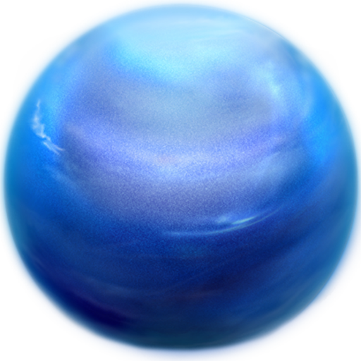

PLANETA URANO
O planeta Urano é o terceiro maior do Sistema Solar e está posicionado na sétima órbita a partir do Sol.
Formado principalmente por gases e fluidos, Urano não possui uma superfície sólida como a Terra. Quase um
gêmeo em tamanho de Netuno, Urano tem mais metano em sua atmosfera principalmente de hidrogênio e hélio do
que Júpiter ou Saturno. O metano dá a Urano sua tonalidade azul. Descoberto: 13 de março de 1781 por William
Herschel.
Distancia do sol: 1,8 bilhão de milhas, cerca de 19 vezes mais longe do que a Terra.
Diâmetro: Cerca de 31.500 milhas.
Temperaturas: -357 graus Fahrenheit.